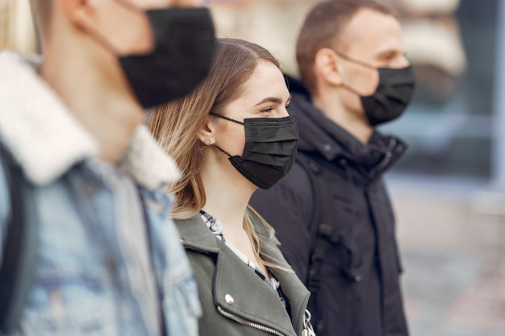

Que es el Covid-19?
Los coronavirus (CoV) son una amplia familia de virus que pueden causar diversas afecciones, desde el resfriado común hasta enfermedades más graves, como ocurre con el coronavirus causante del síndrome respiratorio de Oriente Medio (MERS-CoV) y el que ocasiona el síndrome respiratorio agudo severo (SRAS-CoV). Un nuevo coronavirus es una nueva cepa de coronavirus que no se había encontrado antes en el ser humano.
Donde se origino el Covid-19?
El 31 de diciembre de 2019, la Organización Mundial de la Salud (OMS) recibió reportes de presencia de neumonía, de origen desconocido, en la ciudad de Wuhan, en China. Rápidamente, a principios de enero, las autoridades de este país identificaron la causa como una nueva cepa de coronavirus.
Como evitar contagiarse?
-Cúbrase siempre la boca y la nariz con un pañuelo desechable al toser o estornudar o cúbrase con la parte interna del codo y no escupa.
-Bote los pañuelos desechables usados a la basura.
-Lávese las manos inmediatamente con agua y jabón por al menos 20 segundos.